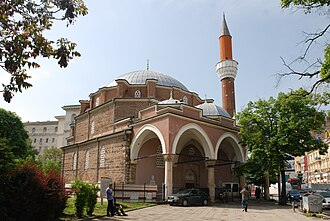

Giới thiệu
La mosquée Bania Bachi est une mosquée bulgare se trouvant à Sofia. C'est l'une des plus anciennes mosquées d'Europe, elle a été construite en 1567.
مسجد بنيا باشي مسجد في صوفيا. تم بناؤه أثناء الحقبة العثمانية في بلغاريا، تحديدا عام 1576. اشتق المسجد اسمه من جملة "Banya Bashi" والتي تعني «الحمامات الكثيرة». حيث يقع المسجد الموجود حاليا على عدة برك وحمامات قديمة، حيث يمكن مشاهدة البخار يخرج من المصارف في أرضية المسجد بالقرب من الجدران. يشتهر المسجد بقبته الضخمة ومنارته العالية.
Banya Bashi Mosque is a Sunni Islamic mosque in Sofia, Bulgaria.
Banyabaşı Camii, Bulgaristan'ın başkenti Sofya'da 16. yüzyılda inşa edilmiş ve günümüze cami kimliğini koruyarak gelebilmiş ibadet yapısı. Seyfullah Efendi Camii ve Molla Camii olarak da bilinir.
Masjid Banya Bashi adalah masjid yang berada di Sofia Bulgaria. Masjid ini dibangun oleh arsitek dan insinyur sipil Mimar Sinan. Masjid Banya Bashi terletak di kawasan Boulevard Maria Luiza di pusat Kota Sofia.
بنیا باشی مسجد بلغاریہ کے دار الحکومت صوفیہ میں واقع ایک مسجد ہے۔ یہ یورپ کی قدیم ترین مساجد میں سے ایک ہے جو 1576ء میں اس وقت تعمیر کی گئی جب صوفیہ عثمانی سلطنت کے زیر نگیں تھا۔ یہ مسجد عثمانی دور کے معروف معمار سنان پاشا نے تعمیر کی۔ اس مسجد کی سب سے اہم خصوصیت یہ ہے کہ یہ قدرتی گرم چشموں کے اوپر تعمیر کی گئی ہے۔ یہ مسجد اپنے وسیع گنبد اور بلند میناروں کے باعث بھی مشہور ہے۔ بنیا باشی صوفیہ کی واحد مسلم عبادت گاہ ہے جس کی مسجد کی حیثیت ابھی تک قائم ہے۔ یہ بلغاریہ پر 5 صدیوں تک جاری رہنے والے عثمانی دور کی ایک عظیم یادگار ہے۔ یہ شہر میں مقیم ہزاروں مسلم باشندوں کے زیر استعمال ہے۔
Die Banja-Baschi-Moschee ist die größte und einzig aktive Moschee in der bulgarischen Hauptstadt Sofia. Sie ist eines der bedeutendsten Bauwerke Sofias aus der Zeit der osmanischen Herrschaft und wurde 1566/67 erbaut. Sie ist eine der ältesten Moscheen in Europa.
La mezquita Banya Bashi es una mezquita situada en Sofía, Bulgaria, que corresponde al periodo de la arquitectura otomana clásica.
La moschea Banja Baši è una moschea ottomana di Sofia, capitale della Bulgaria. È la sola moschea di Sofia rimasta aperta al culto.
班亞巴希扎米亞或班亞巴希清真寺 是保加利亚索菲亞的一座奧斯曼保加利亞時期清真寺，由建筑及土木工程师科查·米馬爾·希南建造，1566年始建，1576年落成。其建造于天然温泉之上，甚至可以看到蒸汽从清真寺墙壁附近的地面通风口升起。该清真寺以其直径15米的圆顶及一座尖塔而闻名。外部材质为石头和砖块，内部装饰以彩色瓷砖，圆顶上由铅板覆盖。
Trên bản đồ
Tài liệu và đường dẫn
- Wikipédia — Français
- Wikipédia — العربية
- Wikipédia — English
- Wikipédia — Türkçe
- Wikipédia — Bahasa Indonesia
- Wikipédia — اردو
- Wikipédia — Deutsch
- Wikipédia — Español
- Wikipédia — Italiano
- Wikipédia — 中文
- Wikipédia — Русский
- Wikidata — Q790052
Dữ liệu: Wikidata (CC0), cập nhật 3 tháng một lần. Năm là niên đại xây dựng sớm nhất được biết của công trình: với một công trình về sau mới trở thành thánh đường (như Hagia Sophia), đó là năm của công trình ban đầu. Ảnh: Wikimedia Commons, tác giả và giấy phép ở trang của từng ảnh.